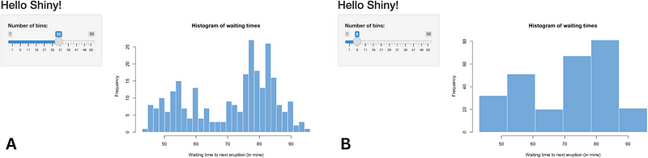
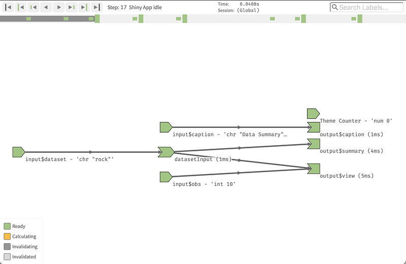
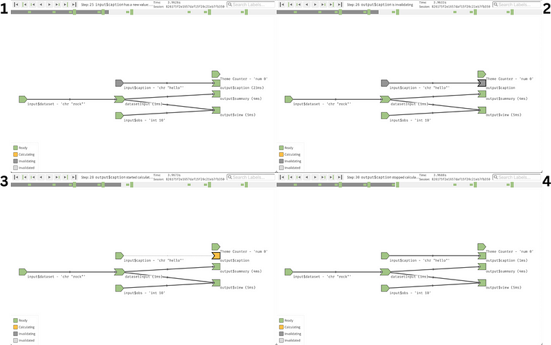
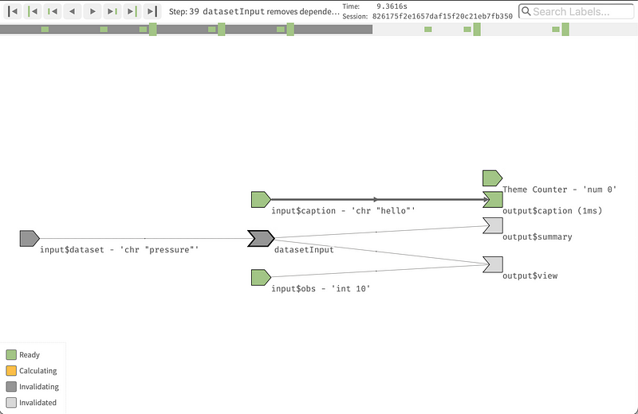
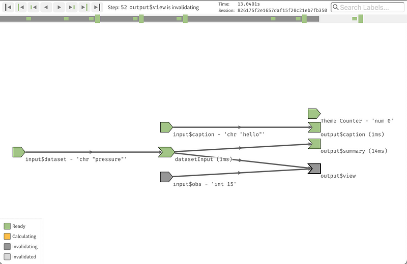

library(shiny)
library(reactlog)
# tell shiny to log all reactivity
reactlog_enable()
# run a shiny app
app <- system.file("examples/03_reactivity", package = "shiny")
runApp(app)Shiny dashboard works because of something called reactivity. When something changes, everything else linked to it changes as well: it “reacts” to the changes.
For instance, let’s look at the 01_hello example in Shiny documentation, which we can start using the command runApp(system.file("examples/01_hello", package = "shiny")).
Whenever we change the number of bins, the appearance of the plot changes. The plot “reacts” to the number of bins.

This is extremely powerful. It is this that allows us to build complex dashboards that can display different outputs based on the users’ interactions, making a significant step forward from a static report.
However, with great powers come great responsibilities. Apps that have a lot of interconnected reactivity connections can become slow and unresponsive while all the UI elements are refreshed.
In some apps, you will also see that the UI refreshes several times at start up, even before the app settles to a ready state where users can interact with it.
These are examples of reactivity gone out of control. Too many things refresh too often.
Investigating the reactivity chain for a Shiny app can be a complex task. The larger the app, the harder it is.
Luckily, there is a great tool that makes this job quite easy: {reactlog}.
{reactlog} has excellent documentation, one of the best I have ever seen. I strongly suggest you go over it to fully understand how it works.
Today, we will simply cover the basics. My goal is not to teach you all the details of the package and of Shiny reactivity, but rather to share another great tool you can add to your Shiny developer’s arsenal.
Before we start, let’s agree on some terminology. Let’s use the convention used by {reactlog}, which is also the same one used in the book Mastering Shiny by Hadley Wickham.

Each of the components of the app (inputs, outputs, observers, etc.), is represented by a shape. Simplifying a little bit, we can think of information going from left (inputs) to right (outputs) following the arrows that connect interdependent components.
Finally, each component can be in one of these four states:
- Ready: items in ready state, not computing anything, just sitting and waiting for something new to happen. For example, a plot that just finished refreshing after the user changed some inputs.
- Invalidating/Invalidated: items that are (or are in the process of becoming) invalidated. For example, the plot after the user changed some inputs, but before the plot itself is refreshed.
- Calculating: items that have just been invalidated, and are actively being recalculated so that they can reach the ready state again.
Let’s put everything in practice with a simple example. We’ll use one of the Shiny app that comes built-in into the {shiny} package: 03\reactivity.
Let’s start the {reactlog} engine and the Shiny app.
With the app open, let’s make a few changes:
- Caption to “hello”`.
- Choose the dataset “pressure”.
- Set the Number of observations to 15.
Now we can close the app and explore the reactivity log.
# once app has closed, display reactlog from shiny
shiny::reactlogShow()The chart opens up with the app in ready state, after the initial flush. If we want to examine the app startup, we can simply use the left arrow in the navigation bar to move back in time.

The first thing we changed was the “Caption”. The reactivity chart shows us that the input became invalid (1), and that caused the UI text to become invalid as well (2). Following that, the UI text is re-calculated by fetching the new value of the input (3). After this, the app is in a ready state again (4).

The next thing we did was to change the dataset used. This change caused a lot more components to become invalid. The summary table and the data table both depend on the source data, so they need to become invalid.

Once again, when all connected items are invalidated, they will be re-calculated and the app eventually reaches the ready state.
Finally, we changed the number of rows to be displayed. This action only invalidates the dataset view, which is quickly re-calcualted to bring us back to the ready state.

Conclusions
This is it. The package is this simple to use, yet so powerful. The recommendation I have is to spend some time exploring your reactivity chart in depth, to fully understand what causes parts of the app to be re-calculated. The more you can simplify the reactivity tree, the more responsive your app can be.
Another benefit of simplifying the reactivity tree is that your app will be easier to maintain and enhance. You will likely end up with fewer interconnected items that will create cognitive load when a new developer needs to read and understand the app.
Once again, I strongly advise you to have a good read of the excellent documentation for the reactlog package. If you don’t end up using the package, at least you’ll have a very good idea on how to write documentation for your own work.